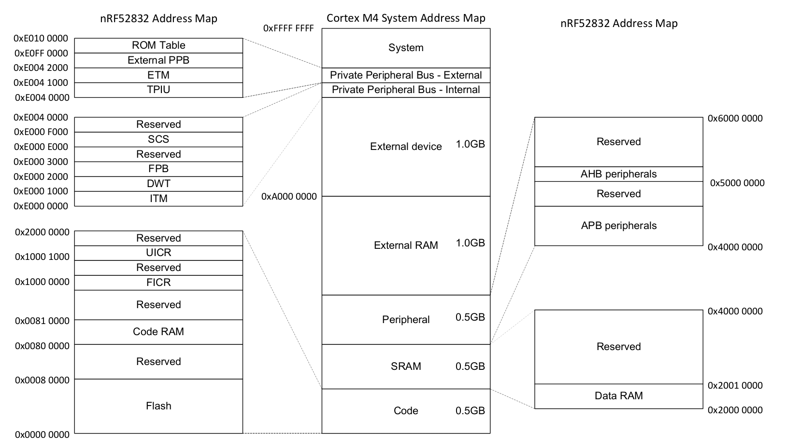

外设
什么是外设?
很多微控制器不仅仅只有 CPU, RAM, 或 FLASH闪存 - 他们是用与微控制器之外的系统进行交互, 即通过传感器, 马达, 或者像是显示器或键盘这样的人机界面直接的或简洁的与周围交互. 这些部件就叫做外设.
这些外设很有用, 因为他们能够让开发者把要干的事丢给它们, 这样就不用让软件来处理所有的事情. 就像是桌面开发者把图像处理的部分丢给显卡一样, 嵌入式开发者能够把一些任务放在外围设备上, 这样就可以让CPU有时间去干更重要的事, 或者什么都不干来省电.
如果你看一下上个世纪70年代到80年代的旧型号家用电脑(上个世代的电脑和微控制器没差多少), 你可以发现:
- 一个处理器
- 一个 RAM 芯片
- 一块 ROM 芯片
- 一个 I/O 控制器
RAM, ROM芯片还有I/O控制器(系统中的外设)会通过一系列并行接口,又叫做'总线'参与处理器的工作. 总线带有地址信息, 用来在总线上选择处理器想与那个外设通信. 在我们的嵌入式处理器中, 也是同样的规则 - 只不过是它们都被集成在了一块硅片上.
线性实际内存空间
在微控制器, 向某些地址写入数据, 如 0x4000_0000 或 0x0000_0000 , 也会是一个完全有效的操作.
在一个桌面系统上, 对内存的读取写入操作要经过 MMU, Memory Management Unit. 它有两个主要功能: 限制对内存的访问(防止一个进程读取或者修改另一个程序的内存); 并且将物理内存重新映射到虚拟内存中. 微控制器一般没有 MMU , 作为代替它们在软件中使用真实的内存地址.
尽管32位微控制器有一个实际的线性内存地址, 起始 0x0000_0000 至 0xFFFF_FFFF, 它们通常只使用该范围内的几百KB作为实际内存. 留下了很多内存空间. 在前面的章节中, 我们说过 RAM 位于地址 0x2000_0000. 如果我们的 RAM 有64KB 大小(最大地址0xFFFF), 那实际内存空间就是从 0x2000_0000 到 0x2000_FFFF. 当我们向 0x2000_1234 写入时, 实际上内部发生的是一些逻辑检测到我们用到地址的上半部分(这里是 0x2000 ), 然后激活RAM, 以便寻找下半部分地址(这里是 0x1234 ). 在 Cortex-M 上, 我们将ROM映射到 0x0000_0000 上, 假设你有 512KB ROM, 那就是从 0x0000_0000 到 0x0007_FFFF. 微控制器的设计人员没有忽略这两部分之间的剩余地址, 而是在他们上面映射了外设的接口. 最后看起来像这样:

Nordic nRF52832 Datasheet (pdf)
内存映射外设
乍一看, 与外设的交互十分简单, 将正确的数据写入到正确的内存地址上. 例如, 通过串口发送32位的数据就和直接向一个地址写入32位数据一样简单, 串口就会自动读取然后发送数据.
配置这些外设的工作都很相似. 不是调用用于配置它们的函数, 而是直接公开一块内存用于硬件API. 将 0x8000_0000 写入配置寄存器, SPI端口便会以 8Mb/s 的速度发送数据. 将 0x2000_0000 写入相同地址, SPI就会以 125kb/s 的速度发送数据. 这些配置寄存器看起来和这个一样:

Nordic nRF52832 Datasheet (pdf)
无论使用哪种语言, C, 汇编还是Rust, 都是像这样直接与硬件交互.